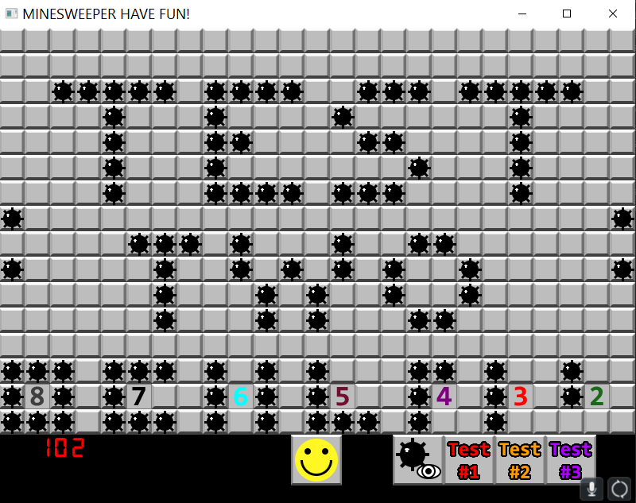

Image Examples
Keeping it close to the original
Minesweeper is a well known game without many flaws. The idea for this project was to keep it as similar as possible while adding some quality of life features
1 / 3

A new game with a couple of clicks
2 / 3

X-ray / Cheat mode
3 / 3

A custom level with all bomb placements